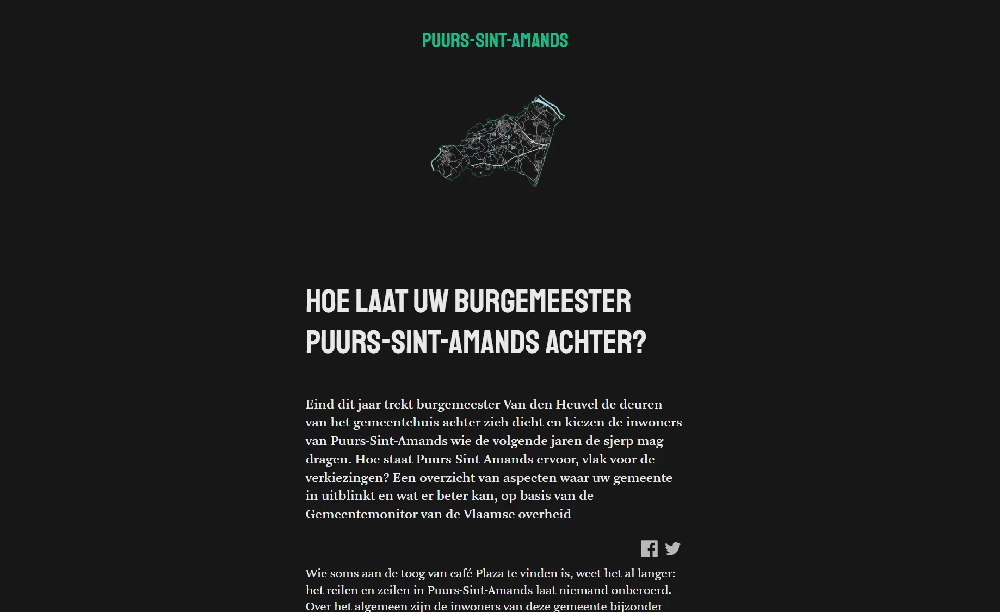
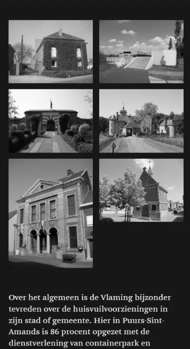
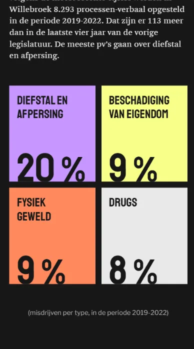
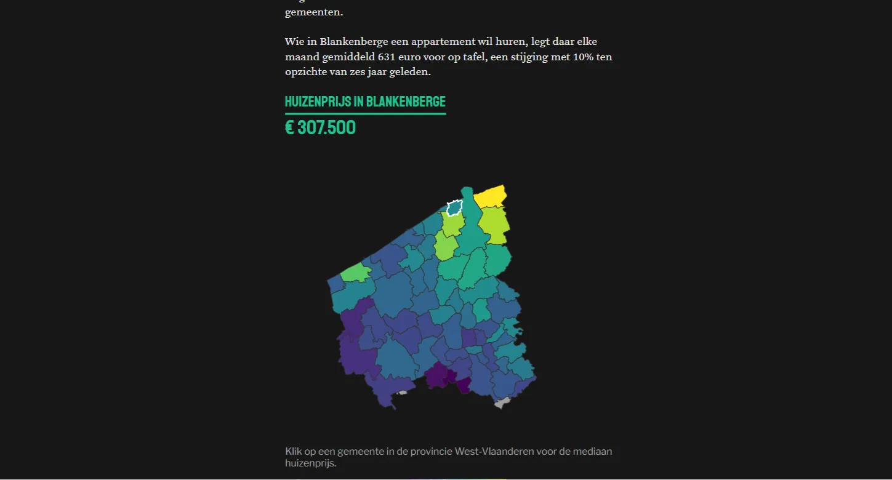
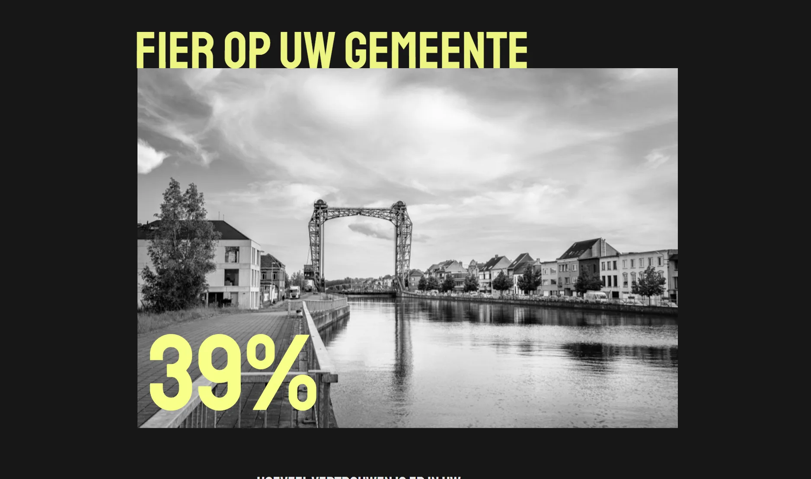

We set to work with data from the Flemish Gemeente- en Stadsmonitor (Municipal and City Monitor): one template for 300 unique municipality profiles.
Each report shows the mayor, statistics, a custom map, a photo gallery and comparison charts, all tailored to the municipality you're in. A coastal town like Blankenberge gets different comparison groups than a regional city like Ghent.



The conditional text generation was the most challenging part: for each municipality, picking the right trend, comparison group and context from data in Google Sheets. An interactive D3 choropleth shows house prices, and comparison bars score the municipality on road safety, crime and ageing. The photos and image galleries were gathered with scrapers from our own and public sources, and the whole thing is built in Svelte.


Made with
Made by
- Jeroen Struys
- Text
- Andy Stevens
- Text & production
- Tina Boeykens
- Text & production
- Joppe Rabijns
- Production